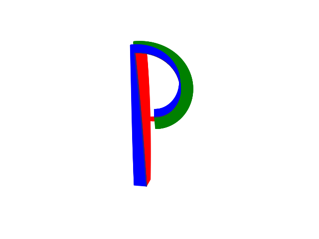

Note
Click here to download the full example code
Plot Straight Line Paths¶
We will compose a trajectory of multiple straight line paths in exponential coordinates. This is a demonstration of batch conversion from exponential coordinates to transformation matrices.
print(__doc__)
import numpy as np
import matplotlib.pyplot as plt
from pytransform3d.plot_utils import Trajectory, make_3d_axis, remove_frame
from pytransform3d.trajectories import transforms_from_exponential_coordinates
from pytransform3d.transformations import (
exponential_coordinates_from_transform, transform_from)
from pytransform3d.rotations import active_matrix_from_angle
def time_scaling(t, t_max):
"""Linear time scaling."""
return np.asarray(t) / t_max
def straight_line_path(start, goal, s):
"""Compute straight line path in exponential coordinates."""
start = np.asarray(start)
goal = np.asarray(goal)
return (start[np.newaxis] * (1.0 - s)[:, np.newaxis]
+ goal[np.newaxis] * s[:, np.newaxis])
s = time_scaling(np.linspace(0.0, 5.0, 50001), 5.0)
start = transform_from(
R=active_matrix_from_angle(1, -0.4 * np.pi),
p=np.array([-1, -2.5, 0])
)
goal1 = transform_from(
R=active_matrix_from_angle(1, -0.1 * np.pi),
p=np.array([-1, 1, 0])
)
goal2 = transform_from(
R=active_matrix_from_angle(2, -np.pi),
p=np.array([-0.65, -0.75, 0])
)
path1 = straight_line_path(
exponential_coordinates_from_transform(start),
exponential_coordinates_from_transform(goal1),
s
)
path2 = straight_line_path(
exponential_coordinates_from_transform(goal1),
exponential_coordinates_from_transform(goal2),
s
)
H = transforms_from_exponential_coordinates(np.vstack((path1, path2)))
ax = make_3d_axis(1.0)
trajectory = Trajectory(H, n_frames=1000, show_direction=False, s=0.3)
trajectory.add_trajectory(ax)
ax.view_init(azim=-95, elev=70)
ax.set_xlim((-2.2, 1.3))
ax.set_ylim((-2.5, 1))
remove_frame(ax)
plt.show()
Total running time of the script: ( 0 minutes 1.603 seconds)